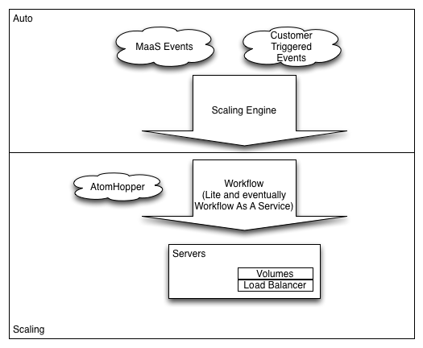
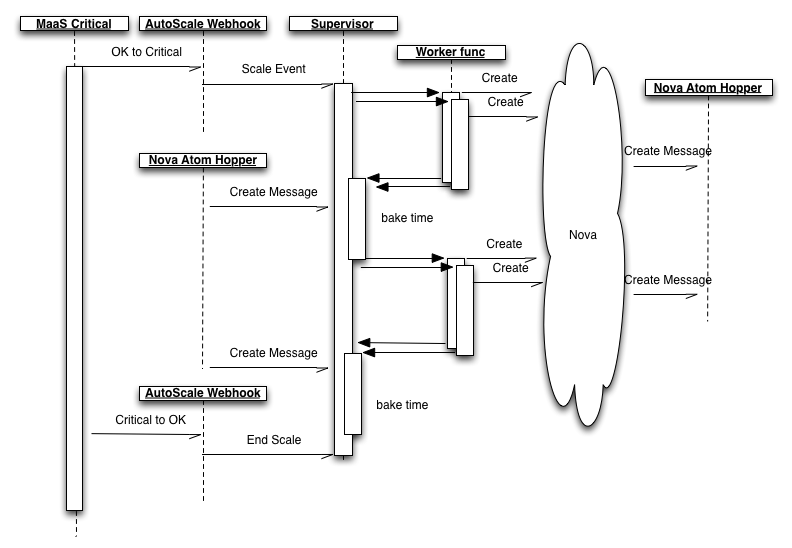

What?
- When a user-configurable threshold is reached, spin up more servers
- When a user-configurable threshold is reached, shut down more servers
- Don't accidentally cause users to exceed their budget
Why?
- We get rejected at the beginning of the conversation with companies because we don't have it
- Sell more compute hours
Who?
- Management: Greg, Duncan
- TPM: Felix
- Software Engineering: Ying, David, Ken
- Dev Ops: Phil, Shawn
- Quality: Alex, Lekha
Technological Stack
- Twisted Python
- Cassandra
- Littlechef
- VMWare instead of Vagrant
- JIRA instead of v1
- Klein and MagicMock
Product Observation
- Amazon AutoScale represents the MVP
- ..but...
- We can do much better
- (Especially in terms of a clean API and Reach UI)
Architecture

Sequence of operation

Salient Points
- v1 requires images to be self-provisioning (Service Registry is your friend)
- We need to be able to be counted on, much in the same way as MaaS, so we need to spend time working on cross-colo resiliency
- Allowing MaaS to generate scale-up/scale-down events means that we don't need to write a micro-MaaS inside of our product
- We are crossing the rubicon: JSON only, no XML
Social features
- Kanban instead of Scrum
- Teatime instead of standups